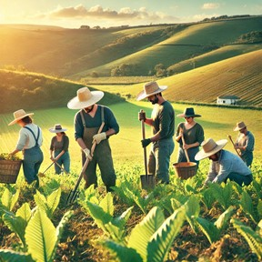
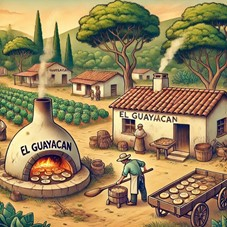
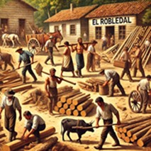
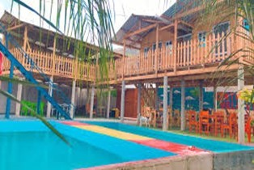
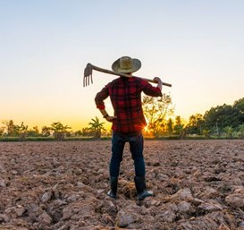

Corral Falso

Es conocida por sus personas trabajadoras y la producción de rosquillas.
El Espinito
Es una aldea donde la mayoría de sus habitantes se dedican a la agricultura.
El Guayacán
Es famoso por sus rosquillas, ojaldres y la agricultura.
El Robledal
Es una aldea de personas luchadoras y trabajadoras.
La Concepción
Es conocida por su turismo de balneario y sus comidas típicas.
Las Tunas
Es una aldea donde la mayoría de sus habitantes son agricultores.
San Jerónimo

Es una aldea de personas trabajadoras en el rubro de la agricultura y ganadería.
Santa Rosa

Es conocida por personas laboriosas apasionadas a la agricultura y la producción de hortalizas.